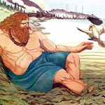

Ньерд, в скандинавської міфології бог моря. Він усмиряв бурі, підняті буйним Егіри. М'який і добродушний, Ньерд любив свої залиті сонцем фіорди, притулок священних чайок і лебедів. Глибоко шанований моряками і рибалками, він допомагав потрапили в біду кораблям, посилав попутні вітри і викликав літні дощі. Ньерд - представник божественної раси ванів, батько богів родючості Фрейра і Фрей. Коли між двома гілками божественної сім'ї, ванами і асами, було укладено мир, Ньерд, Фрейр і Фрейя вирушили жити до асам.
За деякими версіями міфу, матір'ю Фрейра і Фрей була рідна сестра Ньерда, Нертус, але так як аси не схвалювали шлюби між братом і сестрою, то Нертус не супроводжується чоловіка і дітей в Асгард. Другою дружиною Ньерда стала велетень Скаді, дочка велетня тьяцці. За викрадення золотих яблук Ідунн боги вбили велетня, і Скаді, надівши шолом і кольчугу, з'явилася до них, горя жагою помсти, проте погодилася укласти мир. Відмовившись від золота, Скаді зажадала, щоб боги розсмішили її і дали чоловіка. Ті поставили умову, що велетень вибере чоловіка за формою ніг.
Сміятися Скаді змусив хитромудрий Локі, а що стосується чоловіка, то, помилково вважаючи, ніби найкрасивіші ноги неодмінно повинні належати синові Одіна, Бальдру, богиня вказала на ноги Ньерда, доброго старого бога моря, якому були далекі хвилювали її пристрасті. Ньерд вважав, що батьківщина Скаді, Йотунгейм, надто холодна і безлюдна, а Скаді не до душі був постійний шум прибою і суєта на верфі у замку Ньерда в Асгарді; їй, як духу зими, засніжені схили були миліше морських далей. Провівши по дев'ять ночей в кожному з будинків, подружжя вирішило жити порізно.
Скаді повернулася в гори, до улюбленої полюванні, до лиж, а просмолений усіма вітрами Ньерд продовжував жити у моря. Нездоланна прірва між ними, можливо, означає щось більше, ніж відмінність в смаках. Ньерд, як і всі вани, безсумнівно виконував функції бога родючості, оскільки забезпечував людям не тільки безпеку подорожі по морях, але також достаток, наявність земельної ділянки та народження синів.